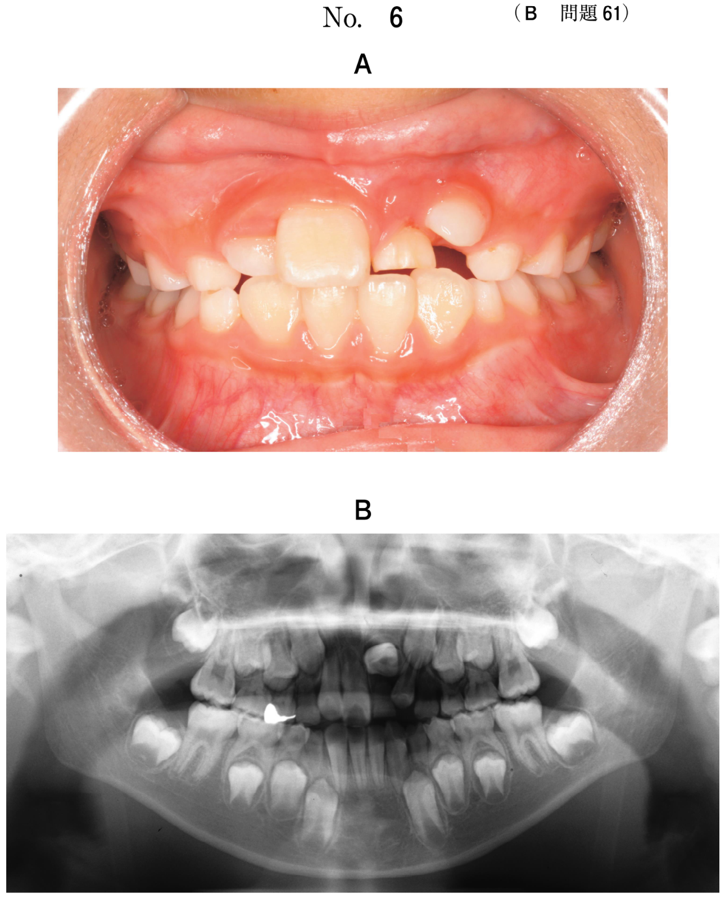
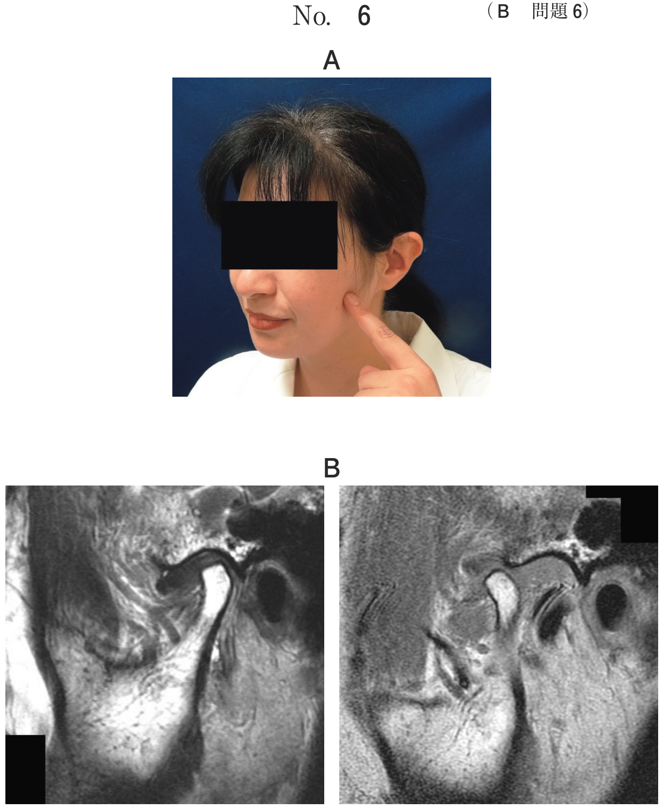
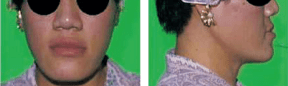

下顎の発育異常を伴う症候群
Beckwith-Wiedemann症候群（EMG症候群）
常染色体劣性遺伝。
| 項目 | 内容 |
|---|---|
| 3主徴 | 臍帯脱出（E: Exomphalos）、巨舌（M: Macroglossia）、巨体（G: Gigantism） |
| 咬合 | 巨舌により下顎前突・開咬を呈する |
| 知的障害 | なし |
| 経過 | 多くは成人までに消失する |
| 治療 | 不正咬合の改善には舌縮小術を行う |
Robinシークエンス（Pierre Robin症候群）
| 項目 | 内容 |
|---|---|
| 3主徴 | 小下顎、舌根沈下、上気道閉塞 |
| 合併 | 口蓋裂、心疾患、眼疾患 |
| 注意点 | 呼吸困難・挿管困難症。仰臥位で気道閉塞のリスク |
※Robinシークエンスでは仰臥位で舌根が沈下し気道を閉塞するため、歯科診療を水平位で行うと気道閉塞の危険がある。
第一第二鰓弓症候群（Goldenhar症候群）
第一・第二鰓弓由来の発育異常。
| 項目 | 内容 |
|---|---|
| 下顎所見 | 下顎の低形成（筋突起、関節突起）、下顎枝の形成不全 |
| 顔面所見 | 耳介低形成、巨口症（横顔裂） |
| 口腔所見 | 口蓋裂 |
| 発症 | 片側性に発症しやすい |
※眼（眼球結膜類上皮腫）・脊椎奇形を合併 → Goldenhar症候群と呼ぶ
※第一鰓弓：三叉神経支配（咀嚼筋、舌骨上筋群、口蓋帆張筋）/ 第二鰓弓：顔面神経支配（表情筋、舌骨上筋群）
- Treacher Collins症候群：第一・第二鰓弓の発生異常で両側性に顔面低形成
- 第一第二鰓弓症候群：片側性に発症しやすい
アクロメガリー（先端巨大症）
下垂体腺腫による成長ホルモン（GH）の過剰分泌が原因。骨端線閉鎖後に発症。
| 項目 | 内容 |
|---|---|
| 全身所見 | 手足の巨大化、前額部突出、軟組織の肥大 |
| 顎顔面所見 | 下顎前突（進行性）、空隙歯列 |
| 臨床像 | 成人後に徐々に進行する下顎前突 →「数年前から次第に増悪」がキーワード |
骨延長術の適応
顎骨の形態異常（低形成）に対して、骨切り後に骨延長器を用いて徐々に骨を延長する術式。
適応となる疾患
- Crouzon症候群（中顔面低形成に対して上顎延長）
- Robinシークエンス（小下顎に対して下顎延長）
- Treacher Collins症候群（顎骨低形成に対して延長）
- 第一第二鰓弓症候群（Goldenhar症候群）（下顎低形成に対して延長）
※McCune-Albright症候群（線維性異形成症）やvon Recklinghausen病は骨延長術の適応ではない
水平位での気道閉塞リスク
| 疾患 | 気道閉塞の機序 |
|---|---|
| Robinシークエンス | 小下顎による舌根沈下 → 仰臥位で上気道閉塞 |
| Treacher Collins症候群 | 両側性の顎骨低形成 → 後鼻腔狭窄 → 気道閉塞 |
過去問
生後11か月の乳児。口唇の閉鎖不全を主訴として来院した。体重は12kgで臍帯ヘルニアを合併していた。初診時の顔貌写真（別冊No.6）を別に示す。考えられるのはどれか。1つ選べ。

b Crouzon症候群
c Robinシークエンス
d Treacher Collins症候群
e Beckwith-Wiedemann症候群
【解説】口唇閉鎖不全（巨舌による）＋体重12kg（巨体）＋臍帯ヘルニア（臍帯脱出）→ EMG症候群 = Beckwith-Wiedemann症候群（e）。3主徴がそろっている典型例。
巨舌を伴うのはどれか。1つ選べ。
b Pierre Robin症候群
c Russell-Silver症候群
d Treacher Collins症候群
e Beckwith-Wiedemann症候群
【解説】巨舌はBeckwith-Wiedemann症候群（e）のM（Macroglossia）に該当する主徴。Down症候群も巨舌を伴うが選択肢にない。b（Pierre Robin症候群）は小下顎・舌根沈下であり巨舌ではない。
Beckwith-Wiedemann 症候群でみられる不正咬合の改善を目的に行うのはどれか。1つ選べ。
b 口蓋形成術
c 咽頭弁形成術
d 舌小帯切除術
e 上唇小帯切除術
【解説】Beckwith-Wiedemann症候群の不正咬合（下顎前突・開咬）は巨舌が原因。巨舌を縮小する舌縮小術（a）により不正咬合の改善を図る。
下顎前突を呈するのはどれか。1つ選べ。
b Robin シークエンス
c Russell-Silver 症候群
d Treacher Collins 症候群
e Beckwith-Wiedemann 症候群
【解説】Beckwith-Wiedemann症候群（e）は巨舌により下顎前突を呈する。b（Robinシークエンス）は小下顎で下顎後退。d（Treacher Collins症候群）も下顎低形成で下顎後退。
生後1か月の乳児。哺乳障害がみられたため、小児科からの紹介で来院した。出生直後から仰臥位で吸気時の喘鳴とチアノーゼがみられるという。初診時の側貌写真（別冊No.10A）、口腔内写真（別冊No.10B）及び頭部側方向エックス線写真（別冊No.10C）を別に示す。考えられる疾患はどれか。1つ選べ。

b Apert 症候群
c Crouzon 症候群
d Robin シーク エンス
e Beckwith-Wiedemann 症候群
【解説】「仰臥位で吸気時の喘鳴とチアノーゼ」→ 上気道閉塞。小下顎＋舌根沈下＋気道閉塞のRobinシークエンス（d）の3主徴。頭部側方向エックス線で小下顎と舌根沈下が確認できる。
歯科診療を水平位で行ったとき、気道閉塞を起こす危険性が高いのはどれか。1つ選べ。
b Klinefelter症候群
c 鎖骨頭蓋骨異形成症
d Treacher Collins症候群
e Beckwith-Wiedemann症候群
【解説】Treacher Collins症候群（d）は両側性の顎骨低形成（小顎症）により気道が狭く、水平位（仰臥位）で気道閉塞のリスクが高い。Robinシークエンスも同様のリスクがあるが選択肢にない。
下顎枝の形成不全を特徴とするのはどれか。1つ選べ。
b Apert症候群
c Turner症候群
d Klinefelter症候群
e 第一第二鰓弓症候群
【解説】第一第二鰓弓症候群（e）は第一・第二鰓弓由来の発育異常で、下顎の低形成（筋突起・関節突起）＝下顎枝の形成不全が特徴。a（Down）は21トリソミー、b（Apert）は頭蓋骨早期癒合＋合指、c（Turner）は45,X女性、d（Klinefelter）はXXY男性。
Goldenhar 症候群にみられる症状はどれか。2つ選べ。
b 横顔裂
c 両眼隔離
d 下顎低形成
e 頭蓋骨早期癒合
【解説】Goldenhar症候群（第一第二鰓弓症候群）では、下顎低形成（d）と横顔裂（b＝巨口症）がみられる。a（巨舌）はBeckwith-Wiedemann症候群。c（両眼隔離）はApert/Crouzon症候群。e（頭蓋骨早期癒合）もApert/Crouzon症候群。
7歳の女児。歯並びと咬み合わせが悪いことを主訴として来院した。1歳6か月時に口蓋形成術を受けたという。初診時の顔貌写真（別冊No.12A）、口腔内写真（別冊No.12B）及びエックス線写真（別冊No.12C）を別に示す。疑われるのはどれか。1つ選べ。

b Crouzon症候群
c 鎖骨頭蓋骨異形成症
d 第一第二鰓弓症候群
e Beckwith-Wiedemann症候群
【解説】口蓋形成術の既往＋顔貌写真で片側の顔面低形成（耳介低形成を含む）→ 第一第二鰓弓症候群（d）。片側性に発症しやすい点が特徴。b（Crouzon）は中顔面低形成＋両眼開離。c（鎖骨頭蓋骨異形成症）は多数歯埋伏が特徴。
3か月の乳児。口腔管理を希望して来院した。初診時の顔貌写真（別冊No.8） を別に示す。今後の可能性として保護者に説明すべきなのはどれか。2つ選べ。

b 多数歯欠如
c タウロドント
d 下顎枝の劣成長
e 咀嚼筋の低形成
【解説】顔貌写真で耳介低形成と片側の顔面低形成 → 第一第二鰓弓症候群。第一鰓弓由来の咀嚼筋低形成（e）と、関節突起・筋突起を含む下顎枝の劣成長（d）を説明すべき。a（高口蓋）はRobinシークエンス等。c（タウロドント）はKlinefelter症候群。
顎骨の形態異常に骨延長術が適用できるのはどれか。3つ選べ。
b Robinシークエンス
c von Recklinghausen病
d Treacher Collins症候群
e McCune-Albright症候群
【解説】骨延長術は顎骨の低形成に対して適用される。Crouzon症候群（a：中顔面低形成）、Robinシークエンス（b：小下顎）、Treacher Collins症候群（d：顎骨低形成）が適応。c（von Recklinghausen病）は神経線維腫症であり骨延長の適応ではない。e（McCune-Albright症候群）は線維性異形成症であり骨延長の適応ではない。
骨延長術が用いられるのはどれか。1つ選べ。
b 大理石骨病
c Gardner症候群
d Goldenhar症候群
e McCune-Albright症候群
【解説】Goldenhar症候群（d＝第一第二鰓弓症候群）は下顎低形成を伴い、骨延長術の適応となる。a（くる病）は骨の石灰化障害、b（大理石骨病）は骨硬化病変、c（Gardner症候群）は多発性骨腫＋大腸ポリポーシス、e（McCune-Albright症候群）は線維性異形成症であり、いずれも骨延長の適応ではない。
40歳の女性。前歯で食物が噛みにくいことを主訴として来院した。数年前から次第に増悪してきたという。初診時の顔面写真（別冊No.26A）、口腔内写真（別冊No.26B）及びエックス線写真（別冊No.26C）を別に示す。考えられるのはどれか。1つ選べ。

b 線維性異形成症
c アクロメガリー
d Goldenhar症候群
e Beckwith-Wiedemann症候群
【解説】40歳女性で「数年前から次第に増悪」する下顎前突 → アクロメガリー（先端巨大症）（c）。成長ホルモン（GH）の過剰分泌（下垂体腺腫）により、骨端線閉鎖後に下顎骨が徐々に増大する。d（Goldenhar症候群）は先天性で片側性の下顎低形成。e（Beckwith-Wiedemann症候群）は小児期の巨舌で成人までに消失。